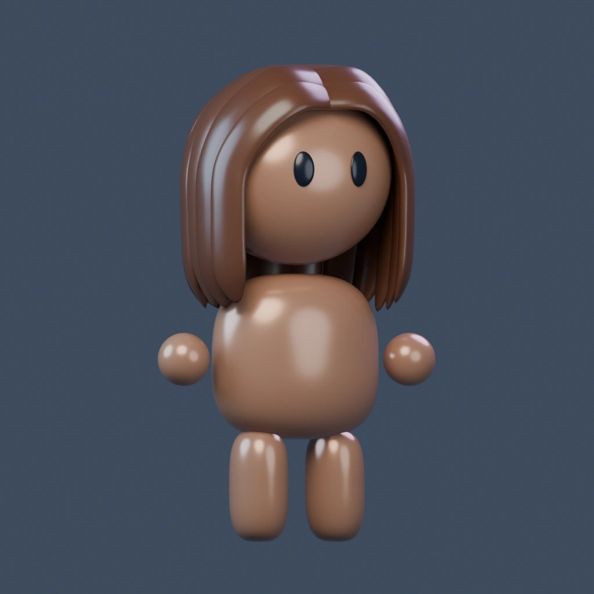
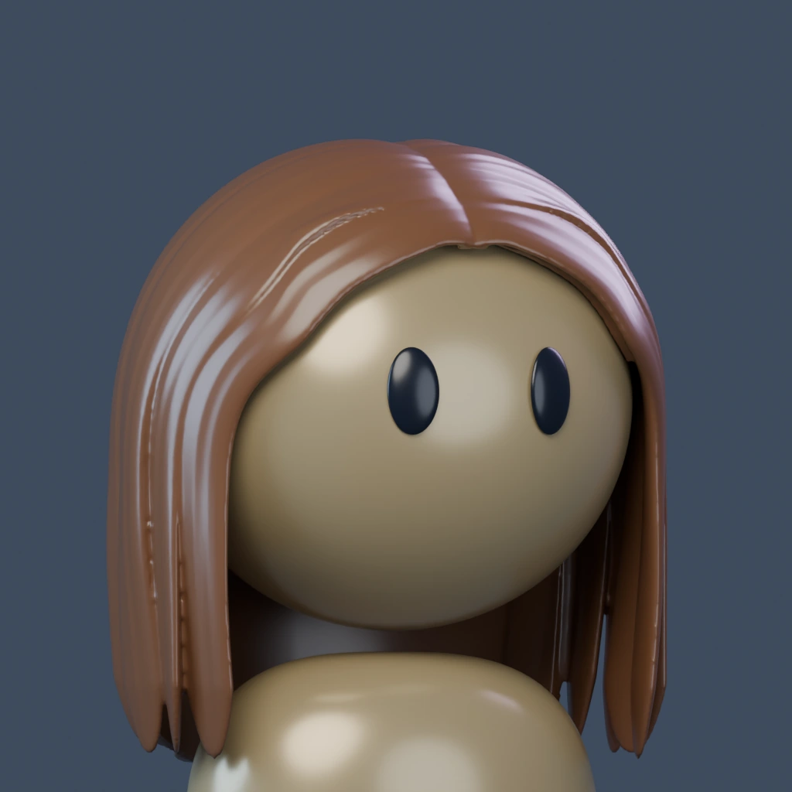
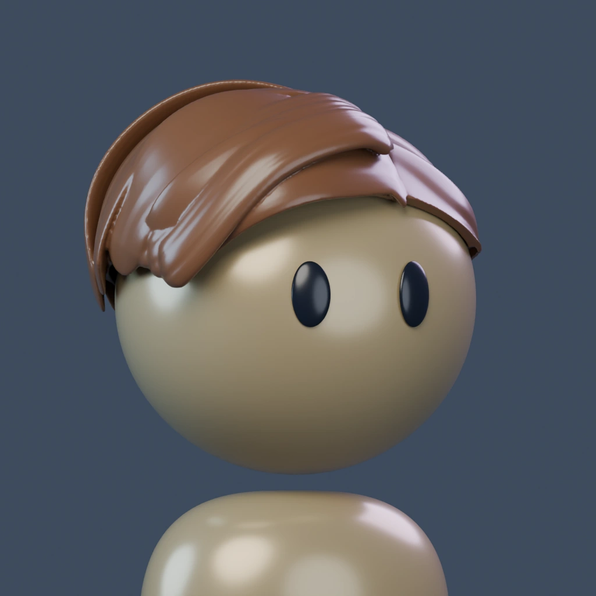
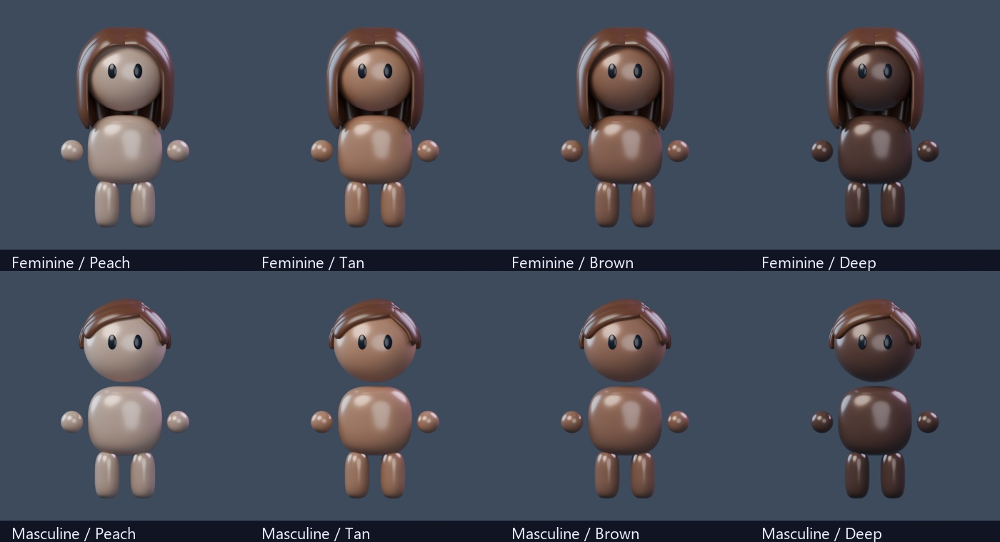

ACTUAL 3D PROTOTYPE · 150Glossy, sculpted hair.
Two rebuilt hairstyles with rounded flowing locks, clearer parts and softer ends. Four new skin tones share the polished finish. This is an experimental candidate for your review.

Rendered preview · choose 3D to rotateRendered views load first. 3D is optional; drag to turn, pinch or scroll to zoom. Each build loads once, then skin changes are immediate. The existing image stays visible while a new view loads.
Rendered close-ups
Blender renders in Tan. The live model uses your selected skin tone.
Hair direction comparison
Previous149 and rebuilt150, shown at the same angle and lighting. Heads and bodies are identical; hair and skin pigments changed.

Before149Rebuilt150
Masculine / Before149Masculine / Rebuilt150Four skin tones
Both builds, under the same lighting. Pigments are shared across builds.

Prototype scope
Both builds share the new head and body placement, compact torso, small floating head gap, close round hands and shorter leg blobs. The feminine torso has a gentle skirt outline. The skin palette is now Peach, Tan, Brown and Deep; the futuristic skin polish is retained.
This pilot includes Straight and Side part. Other hairstyles, clothing and accessories are still pending for this new character. The existing avatar system and Avatar Studio are preserved. Live lighting approximates the native renders.